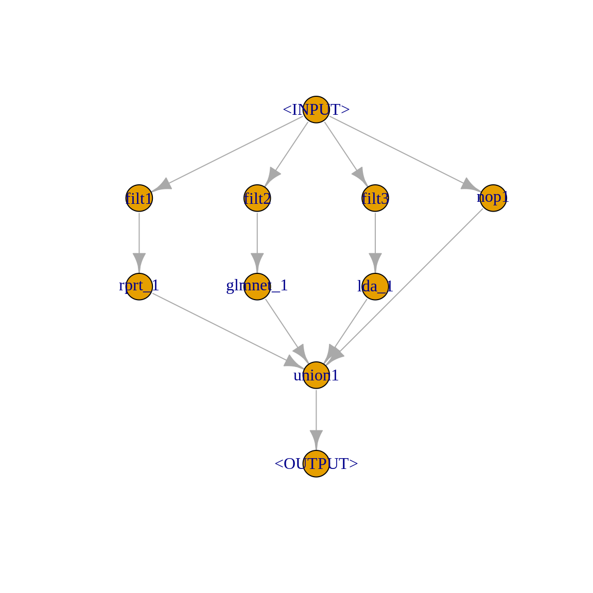
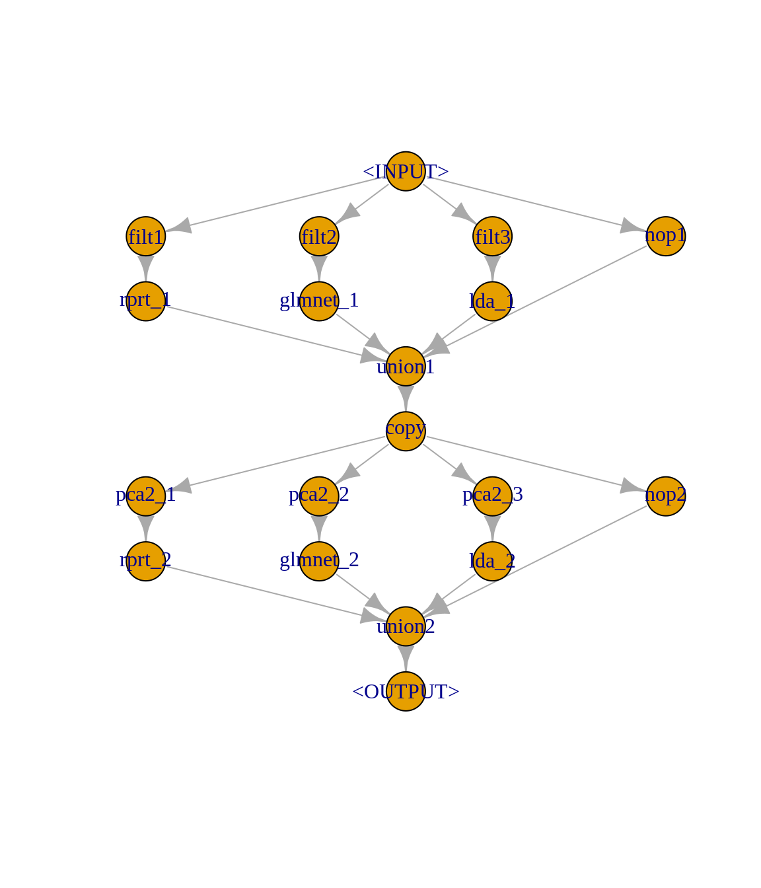
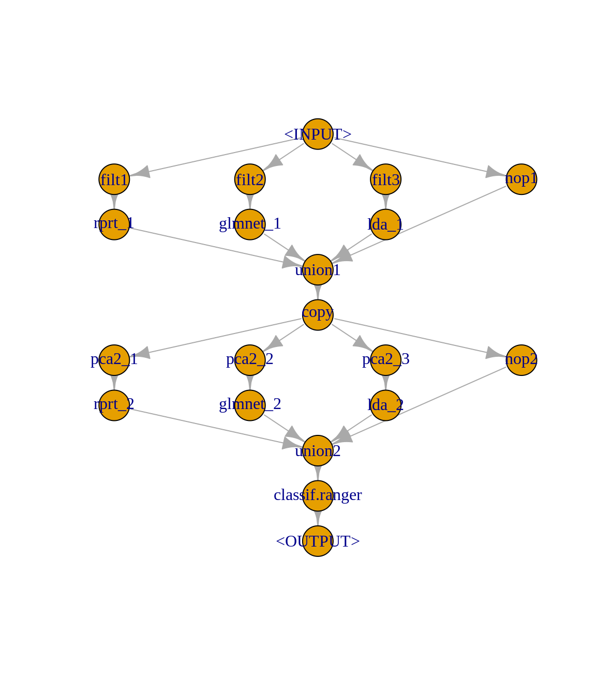

This tutorial explains how to create and tune a multilevel stacking model using the mlr3pipelines package.
Multilevel stacking is an ensemble technique, where predictions of several learners are added as new features to extend the orginal data on different levels. On each level, the extended data is used to train a new level of learners. This can be repeated for several iterations until a final learner is trained. To avoid overfitting, it is advisable to use test set (out-of-bag) predictions in each level.
In this post, a multilevel stacking example will be created using mlr3pipelines and tuned using mlr3tuning. A similar example is available in the mlr3book. However, we additionally explain how to tune the hyperparameters of the whole ensemble and each underlying learner jointly.
In our stacking example, we proceed as follows:
rpart, glmnet and lda) on a sparser feature space obtained using different feature filter methods from mlr3filters to obtain slightly decorrelated predictions. The test set predictions of these learners are attached to the original data (used in level 0) and will serve as input for the learners in level 1.rpart, glmnet and lda). The test set predictions of the level 1 learners are attached to input data used in level 1.ranger learner to the data extended by level 1. Note that the number of features selected by the feature filter method in level 0 and the number of principal components retained in level 1 will be jointly tuned with some other hyperparameters of the learners in each level.
library(mlr3)
library(mlr3learners)
library(mlr3pipelines)
library(mlr3filters)
library(mlr3tuning)
library(paradox)
library(glmnet)For the stacking example, we use the sonar classification task:
sonar_task = tsk("sonar")
sonar_task$col_roles$stratum = sonar_task$target_names #stratificationAs mentioned, the level 0 learners are rpart, glmnet and lda:
rprt_lrn = lrn("classif.rpart", predict_type = "prob")
glmnet_lrn = lrn("classif.glmnet", predict_type = "prob")
lda_lrn = lrn("classif.lda", predict_type = "prob")To create the learner out-of-bag predictions, we use PipeOpLearnerCV():
rprt_cv1 = po("learner_cv", rprt_lrn, id = "rprt_1")
glmnet_cv1 = po("learner_cv", glmnet_lrn, id = "glmnet_1")
lda_cv1 = po("learner_cv", lda_lrn, id = "lda_1")A sparser representation of the input data in level 0 is obtained using the following filters:
anova = po("filter", flt("anova"), id = "filt1")
mrmr = po("filter", flt("mrmr"), id = "filt2")
find_cor = po("filter", flt("find_correlation"), id = "filt3")To summarize these steps into level 0, we use the gunion function. The out-of-bag predictions of all level 0 learners is attached using PipeOpFeatureUnion along with the original data passed via PipeOpNOP():
level0 = gunion(list(
anova %>>% rprt_cv1,
mrmr %>>% glmnet_cv1,
find_cor %>>% lda_cv1,
po("nop", id = "nop1"))) %>>%
po("featureunion", id = "union1")We can have a look at the graph from level 0:
level0$plot(html = FALSE)
Now, we create the level 1 learners:
rprt_cv2 = po("learner_cv", rprt_lrn , id = "rprt_2")
glmnet_cv2 = po("learner_cv", glmnet_lrn, id = "glmnet_2")
lda_cv2 = po("learner_cv", lda_lrn, id = "lda_2")All level 1 learners will use PCA transformed data as input:
level1 = level0 %>>%
po("copy", 4) %>>%
gunion(list(
po("pca", id = "pca2_1", param_vals = list(scale. = TRUE)) %>>% rprt_cv2,
po("pca", id = "pca2_2", param_vals = list(scale. = TRUE)) %>>% glmnet_cv2,
po("pca", id = "pca2_3", param_vals = list(scale. = TRUE)) %>>% lda_cv2,
po("nop", id = "nop2"))
) %>>%
po("featureunion", id = "union2")We can have a look at the graph from level 1:
level1$plot(html = FALSE)
The out-of-bag predictions of the level 1 learners are attached to the input data from level 1 and a final ranger learner will be trained:
ranger_lrn = lrn("classif.ranger", predict_type = "prob")
ensemble = level1 %>>% ranger_lrn
ensemble$plot(html = FALSE)
In order to tune the ensemble’s hyperparameter jointly, we define the search space using ParamSet from the paradox package:
ps_ens = ParamSet$new(
list(
ParamInt$new("filt1.filter.nfeat", 5, 50),
ParamInt$new("filt2.filter.nfeat", 5, 50),
ParamInt$new("filt3.filter.nfeat", 5, 50),
ParamInt$new("pca2_1.rank.", 3, 50),
ParamInt$new("pca2_2.rank.", 3, 50),
ParamInt$new("pca2_3.rank.", 3, 20),
ParamDbl$new("rprt_1.cp", 0.001, 0.1),
ParamInt$new("rprt_1.minbucket", 1, 10),
ParamDbl$new("glmnet_1.alpha", 0, 1),
ParamDbl$new("rprt_2.cp", 0.001, 0.1),
ParamInt$new("rprt_2.minbucket", 1, 10),
ParamDbl$new("glmnet_2.alpha", 0, 1),
ParamInt$new("classif.ranger.mtry", lower = 1L, upper = 10L),
ParamDbl$new("classif.ranger.sample.fraction", lower = 0.5, upper = 1),
ParamInt$new("classif.ranger.num.trees", lower = 50L, upper = 200L)
))Even with a simple ensemble, there is quite a few things to setup. We compare the performance of the ensemble with a simple tuned ranger learner.
To proceed, we convert the ensemble pipeline as a GraphLearner:
ens_lrn = GraphLearner$new(ensemble)
ens_lrn$predict_type = "prob"We define the search space for the simple ranger learner:
ps_ranger = ParamSet$new(
list(
ParamInt$new("mtry", lower = 1L, upper = 10L),
ParamDbl$new("sample.fraction", lower = 0.5, upper = 1),
ParamInt$new("num.trees", lower = 50L, upper = 200L)
))For performance comparison, we use the benchmark function that requires a design incorporating a list of learners and a list of tasks. Here, we have two learners (the simple ranger learner and the ensemble) and one task. Since we want to tune the simple ranger learner as well as the whole ensemble learner, we need to create an AutoTuner for each learner to be compared. To do so, we need to define a resampling strategy for the tuning in the inner loop (we use cv3) and for the final evaluation use use outer_hold:
cv3 = rsmp("cv", folds = 3)
# AutoTuner for the ensemble learner
auto1 = AutoTuner$new(
learner = ens_lrn,
resampling = cv3,
measures = msr("classif.auc"),
tune_ps = ps_ens,
terminator = term("evals", n_evals = 3), # to limit running time
tuner = tnr("random_search")
)
# AutoTuner for the simple ranger learner
auto2 = AutoTuner$new(
learner = ranger_lrn,
resampling = cv3,
measures = msr("classif.auc"),
tune_ps = ps_ranger,
terminator = term("evals", n_evals = 3), # to limit running time
tuner = tnr("random_search")
)
# Define the list of learners
learns = list(auto1, auto2)
# For benchmarking, we use a simple holdout
set.seed(321)
outer_hold = rsmp("holdout")
outer_hold$instantiate(sonar_task)
design = benchmark_grid(
tasks = sonar_task,
learners = learns,
resamplings = outer_hold
)
bmr = benchmark(design, store_models = TRUE)
INFO [14:52:08.911] Benchmark with 2 resampling iterations
INFO [14:52:09.110] Applying learner 'filt1.filt2.filt3.nop1.rprt_1.glmnet_1.lda_1.union1.copy.pca2_1.pca2_2.pca2_3.nop2.rprt_2.glmnet_2.lda_2.union2.classif.ranger.tuned' on task 'sonar' (iter 1/1)
INFO [14:52:09.436] Starting to tune 15 parameters with '<TunerRandomSearch>' and '<TerminatorEvals>'
INFO [14:52:09.437] Terminator settings: n_evals=3
INFO [14:52:09.637] Evaluating 1 configurations
INFO [14:52:09.655] filt1.filter.nfeat filt2.filter.nfeat filt3.filter.nfeat pca2_1.rank. pca2_2.rank. pca2_3.rank.
INFO [14:52:09.655] 49 28 32 6 40 17
INFO [14:52:09.655] rprt_1.cp rprt_1.minbucket glmnet_1.alpha rprt_2.cp rprt_2.minbucket glmnet_2.alpha
INFO [14:52:09.655] 0.08614784 3 0.7938806 0.07687866 1 0.573639
INFO [14:52:09.655] classif.ranger.mtry classif.ranger.sample.fraction classif.ranger.num.trees
INFO [14:52:09.655] 6 0.5136546 198
INFO [14:52:20.616] Benchmark with 3 resampling iterations
INFO [14:52:20.692] Applying learner 'filt1.filt2.filt3.nop1.rprt_1.glmnet_1.lda_1.union1.copy.pca2_1.pca2_2.pca2_3.nop2.rprt_2.glmnet_2.lda_2.union2.classif.ranger' on task 'sonar' (iter 3/3)
INFO [14:52:21.736] Applying learner 'classif.rpart' on task 'sonar' (iter 3/3)
INFO [14:52:21.840] Applying learner 'classif.rpart' on task 'sonar' (iter 2/3)
INFO [14:52:21.943] Applying learner 'classif.rpart' on task 'sonar' (iter 1/3)
INFO [14:52:22.775] Applying learner 'classif.glmnet' on task 'sonar' (iter 1/3)
INFO [14:52:23.019] Applying learner 'classif.glmnet' on task 'sonar' (iter 3/3)
INFO [14:52:23.136] Applying learner 'classif.glmnet' on task 'sonar' (iter 2/3)
INFO [14:52:23.434] Applying learner 'classif.lda' on task 'sonar' (iter 1/3)
INFO [14:52:23.459] Applying learner 'classif.lda' on task 'sonar' (iter 2/3)
INFO [14:52:23.489] Applying learner 'classif.lda' on task 'sonar' (iter 3/3)
INFO [14:52:23.991] Applying learner 'classif.rpart' on task 'sonar' (iter 1/3)
INFO [14:52:24.049] Applying learner 'classif.rpart' on task 'sonar' (iter 3/3)
INFO [14:52:24.104] Applying learner 'classif.rpart' on task 'sonar' (iter 2/3)
INFO [14:52:24.442] Applying learner 'classif.glmnet' on task 'sonar' (iter 1/3)
INFO [14:52:24.523] Applying learner 'classif.glmnet' on task 'sonar' (iter 2/3)
INFO [14:52:24.588] Applying learner 'classif.glmnet' on task 'sonar' (iter 3/3)
INFO [14:52:24.851] Applying learner 'classif.lda' on task 'sonar' (iter 3/3)
INFO [14:52:24.914] Applying learner 'classif.lda' on task 'sonar' (iter 2/3)
INFO [14:52:24.974] Applying learner 'classif.lda' on task 'sonar' (iter 1/3)
INFO [14:52:26.166] Applying learner 'filt1.filt2.filt3.nop1.rprt_1.glmnet_1.lda_1.union1.copy.pca2_1.pca2_2.pca2_3.nop2.rprt_2.glmnet_2.lda_2.union2.classif.ranger' on task 'sonar' (iter 2/3)
INFO [14:52:26.502] Applying learner 'classif.rpart' on task 'sonar' (iter 1/3)
INFO [14:52:26.527] Applying learner 'classif.rpart' on task 'sonar' (iter 2/3)
INFO [14:52:26.559] Applying learner 'classif.rpart' on task 'sonar' (iter 3/3)
INFO [14:52:26.729] Applying learner 'classif.glmnet' on task 'sonar' (iter 2/3)
INFO [14:52:26.774] Applying learner 'classif.glmnet' on task 'sonar' (iter 3/3)
INFO [14:52:26.818] Applying learner 'classif.glmnet' on task 'sonar' (iter 1/3)
INFO [14:52:26.941] Applying learner 'classif.lda' on task 'sonar' (iter 2/3)
INFO [14:52:26.968] Applying learner 'classif.lda' on task 'sonar' (iter 1/3)
INFO [14:52:26.995] Applying learner 'classif.lda' on task 'sonar' (iter 3/3)
INFO [14:52:27.313] Applying learner 'classif.rpart' on task 'sonar' (iter 2/3)
INFO [14:52:27.351] Applying learner 'classif.rpart' on task 'sonar' (iter 1/3)
INFO [14:52:27.396] Applying learner 'classif.rpart' on task 'sonar' (iter 3/3)
INFO [14:52:27.940] Applying learner 'classif.glmnet' on task 'sonar' (iter 1/3)
INFO [14:52:28.009] Applying learner 'classif.glmnet' on task 'sonar' (iter 3/3)
INFO [14:52:28.068] Applying learner 'classif.glmnet' on task 'sonar' (iter 2/3)
INFO [14:52:28.285] Applying learner 'classif.lda' on task 'sonar' (iter 1/3)
INFO [14:52:28.325] Applying learner 'classif.lda' on task 'sonar' (iter 2/3)
INFO [14:52:28.371] Applying learner 'classif.lda' on task 'sonar' (iter 3/3)
INFO [14:52:28.999] Applying learner 'filt1.filt2.filt3.nop1.rprt_1.glmnet_1.lda_1.union1.copy.pca2_1.pca2_2.pca2_3.nop2.rprt_2.glmnet_2.lda_2.union2.classif.ranger' on task 'sonar' (iter 1/3)
INFO [14:52:29.224] Applying learner 'classif.rpart' on task 'sonar' (iter 1/3)
INFO [14:52:29.246] Applying learner 'classif.rpart' on task 'sonar' (iter 3/3)
INFO [14:52:29.273] Applying learner 'classif.rpart' on task 'sonar' (iter 2/3)
INFO [14:52:29.433] Applying learner 'classif.glmnet' on task 'sonar' (iter 3/3)
INFO [14:52:29.469] Applying learner 'classif.glmnet' on task 'sonar' (iter 1/3)
INFO [14:52:29.503] Applying learner 'classif.glmnet' on task 'sonar' (iter 2/3)
INFO [14:52:29.615] Applying learner 'classif.lda' on task 'sonar' (iter 1/3)
INFO [14:52:29.640] Applying learner 'classif.lda' on task 'sonar' (iter 3/3)
INFO [14:52:29.660] Applying learner 'classif.lda' on task 'sonar' (iter 2/3)
INFO [14:52:29.999] Applying learner 'classif.rpart' on task 'sonar' (iter 2/3)
INFO [14:52:30.047] Applying learner 'classif.rpart' on task 'sonar' (iter 1/3)
INFO [14:52:30.095] Applying learner 'classif.rpart' on task 'sonar' (iter 3/3)
INFO [14:52:30.310] Applying learner 'classif.glmnet' on task 'sonar' (iter 1/3)
INFO [14:52:30.363] Applying learner 'classif.glmnet' on task 'sonar' (iter 2/3)
INFO [14:52:30.439] Applying learner 'classif.glmnet' on task 'sonar' (iter 3/3)
INFO [14:52:30.658] Applying learner 'classif.lda' on task 'sonar' (iter 3/3)
INFO [14:52:30.709] Applying learner 'classif.lda' on task 'sonar' (iter 1/3)
INFO [14:52:30.752] Applying learner 'classif.lda' on task 'sonar' (iter 2/3)
INFO [14:52:31.477] Finished benchmark
INFO [14:52:31.486] Result of batch 1:
INFO [14:52:31.489] filt1.filter.nfeat filt2.filter.nfeat filt3.filter.nfeat pca2_1.rank. pca2_2.rank. pca2_3.rank.
INFO [14:52:31.489] 49 28 32 6 40 17
INFO [14:52:31.489] rprt_1.cp rprt_1.minbucket glmnet_1.alpha rprt_2.cp rprt_2.minbucket glmnet_2.alpha
INFO [14:52:31.489] 0.08614784 3 0.7938806 0.07687866 1 0.573639
INFO [14:52:31.489] classif.ranger.mtry classif.ranger.sample.fraction classif.ranger.num.trees classif.auc
INFO [14:52:31.489] 6 0.5136546 198 0.8587759
INFO [14:52:31.490] 1 configurations evaluated
INFO [14:52:31.602] Evaluating 1 configurations
INFO [14:52:31.604] filt1.filter.nfeat filt2.filter.nfeat filt3.filter.nfeat pca2_1.rank. pca2_2.rank. pca2_3.rank.
INFO [14:52:31.604] 19 35 5 44 34 9
INFO [14:52:31.604] rprt_1.cp rprt_1.minbucket glmnet_1.alpha rprt_2.cp rprt_2.minbucket glmnet_2.alpha
INFO [14:52:31.604] 0.05042399 4 0.1274679 0.00734067 6 0.2140072
INFO [14:52:31.604] classif.ranger.mtry classif.ranger.sample.fraction classif.ranger.num.trees
INFO [14:52:31.604] 5 0.8597584 63
INFO [14:52:38.437] Benchmark with 3 resampling iterations
INFO [14:52:38.444] Applying learner 'filt1.filt2.filt3.nop1.rprt_1.glmnet_1.lda_1.union1.copy.pca2_1.pca2_2.pca2_3.nop2.rprt_2.glmnet_2.lda_2.union2.classif.ranger' on task 'sonar' (iter 2/3)
INFO [14:52:38.735] Applying learner 'classif.rpart' on task 'sonar' (iter 1/3)
INFO [14:52:38.753] Applying learner 'classif.rpart' on task 'sonar' (iter 2/3)
INFO [14:52:38.772] Applying learner 'classif.rpart' on task 'sonar' (iter 3/3)
INFO [14:52:38.914] Applying learner 'classif.glmnet' on task 'sonar' (iter 3/3)
INFO [14:52:38.950] Applying learner 'classif.glmnet' on task 'sonar' (iter 1/3)
INFO [14:52:38.982] Applying learner 'classif.glmnet' on task 'sonar' (iter 2/3)
INFO [14:52:39.107] Applying learner 'classif.lda' on task 'sonar' (iter 2/3)
INFO [14:52:39.124] Applying learner 'classif.lda' on task 'sonar' (iter 1/3)
INFO [14:52:39.138] Applying learner 'classif.lda' on task 'sonar' (iter 3/3)
INFO [14:52:39.535] Applying learner 'classif.rpart' on task 'sonar' (iter 1/3)
INFO [14:52:39.590] Applying learner 'classif.rpart' on task 'sonar' (iter 2/3)
INFO [14:52:39.648] Applying learner 'classif.rpart' on task 'sonar' (iter 3/3)
INFO [14:52:39.939] Applying learner 'classif.glmnet' on task 'sonar' (iter 1/3)
INFO [14:52:40.000] Applying learner 'classif.glmnet' on task 'sonar' (iter 3/3)
INFO [14:52:40.053] Applying learner 'classif.glmnet' on task 'sonar' (iter 2/3)
INFO [14:52:40.323] Applying learner 'classif.lda' on task 'sonar' (iter 1/3)
INFO [14:52:40.374] Applying learner 'classif.lda' on task 'sonar' (iter 2/3)
INFO [14:52:40.415] Applying learner 'classif.lda' on task 'sonar' (iter 3/3)
INFO [14:52:41.429] Applying learner 'filt1.filt2.filt3.nop1.rprt_1.glmnet_1.lda_1.union1.copy.pca2_1.pca2_2.pca2_3.nop2.rprt_2.glmnet_2.lda_2.union2.classif.ranger' on task 'sonar' (iter 1/3)
INFO [14:52:41.855] Applying learner 'classif.rpart' on task 'sonar' (iter 3/3)
INFO [14:52:41.899] Applying learner 'classif.rpart' on task 'sonar' (iter 1/3)
INFO [14:52:41.928] Applying learner 'classif.rpart' on task 'sonar' (iter 2/3)
INFO [14:52:42.372] Applying learner 'classif.glmnet' on task 'sonar' (iter 3/3)
INFO [14:52:42.522] Applying learner 'classif.glmnet' on task 'sonar' (iter 2/3)
INFO [14:52:42.617] Applying learner 'classif.glmnet' on task 'sonar' (iter 1/3)
INFO [14:52:42.956] Applying learner 'classif.lda' on task 'sonar' (iter 1/3)
INFO [14:52:42.989] Applying learner 'classif.lda' on task 'sonar' (iter 2/3)
INFO [14:52:43.010] Applying learner 'classif.lda' on task 'sonar' (iter 3/3)
INFO [14:52:43.518] Applying learner 'classif.rpart' on task 'sonar' (iter 2/3)
INFO [14:52:43.598] Applying learner 'classif.rpart' on task 'sonar' (iter 3/3)
INFO [14:52:43.687] Applying learner 'classif.rpart' on task 'sonar' (iter 1/3)
INFO [14:52:44.073] Applying learner 'classif.glmnet' on task 'sonar' (iter 1/3)
INFO [14:52:44.160] Applying learner 'classif.glmnet' on task 'sonar' (iter 3/3)
INFO [14:52:44.233] Applying learner 'classif.glmnet' on task 'sonar' (iter 2/3)
INFO [14:52:44.584] Applying learner 'classif.lda' on task 'sonar' (iter 3/3)
INFO [14:52:44.639] Applying learner 'classif.lda' on task 'sonar' (iter 2/3)
INFO [14:52:44.703] Applying learner 'classif.lda' on task 'sonar' (iter 1/3)
INFO [14:52:45.693] Applying learner 'filt1.filt2.filt3.nop1.rprt_1.glmnet_1.lda_1.union1.copy.pca2_1.pca2_2.pca2_3.nop2.rprt_2.glmnet_2.lda_2.union2.classif.ranger' on task 'sonar' (iter 3/3)
INFO [14:52:46.021] Applying learner 'classif.rpart' on task 'sonar' (iter 3/3)
INFO [14:52:46.044] Applying learner 'classif.rpart' on task 'sonar' (iter 1/3)
INFO [14:52:46.075] Applying learner 'classif.rpart' on task 'sonar' (iter 2/3)
INFO [14:52:46.299] Applying learner 'classif.glmnet' on task 'sonar' (iter 1/3)
INFO [14:52:46.352] Applying learner 'classif.glmnet' on task 'sonar' (iter 2/3)
INFO [14:52:46.408] Applying learner 'classif.glmnet' on task 'sonar' (iter 3/3)
INFO [14:52:46.586] Applying learner 'classif.lda' on task 'sonar' (iter 2/3)
INFO [14:52:46.608] Applying learner 'classif.lda' on task 'sonar' (iter 3/3)
INFO [14:52:46.630] Applying learner 'classif.lda' on task 'sonar' (iter 1/3)
INFO [14:52:47.193] Applying learner 'classif.rpart' on task 'sonar' (iter 2/3)
INFO [14:52:47.280] Applying learner 'classif.rpart' on task 'sonar' (iter 3/3)
INFO [14:52:47.359] Applying learner 'classif.rpart' on task 'sonar' (iter 1/3)
INFO [14:52:47.756] Applying learner 'classif.glmnet' on task 'sonar' (iter 2/3)
INFO [14:52:47.860] Applying learner 'classif.glmnet' on task 'sonar' (iter 3/3)
INFO [14:52:47.987] Applying learner 'classif.glmnet' on task 'sonar' (iter 1/3)
INFO [14:52:48.495] Applying learner 'classif.lda' on task 'sonar' (iter 3/3)
INFO [14:52:48.607] Applying learner 'classif.lda' on task 'sonar' (iter 2/3)
INFO [14:52:48.705] Applying learner 'classif.lda' on task 'sonar' (iter 1/3)
INFO [14:52:49.999] Finished benchmark
INFO [14:52:50.019] Result of batch 2:
INFO [14:52:50.023] filt1.filter.nfeat filt2.filter.nfeat filt3.filter.nfeat pca2_1.rank. pca2_2.rank. pca2_3.rank.
INFO [14:52:50.023] 19 35 5 44 34 9
INFO [14:52:50.023] rprt_1.cp rprt_1.minbucket glmnet_1.alpha rprt_2.cp rprt_2.minbucket glmnet_2.alpha
INFO [14:52:50.023] 0.05042399 4 0.1274679 0.00734067 6 0.2140072
INFO [14:52:50.023] classif.ranger.mtry classif.ranger.sample.fraction classif.ranger.num.trees classif.auc
INFO [14:52:50.023] 5 0.8597584 63 0.8569577
INFO [14:52:50.027] 2 configurations evaluated
INFO [14:52:50.151] Evaluating 1 configurations
INFO [14:52:50.154] filt1.filter.nfeat filt2.filter.nfeat filt3.filter.nfeat pca2_1.rank. pca2_2.rank. pca2_3.rank.
INFO [14:52:50.154] 14 23 27 29 47 9
INFO [14:52:50.154] rprt_1.cp rprt_1.minbucket glmnet_1.alpha rprt_2.cp rprt_2.minbucket glmnet_2.alpha
INFO [14:52:50.154] 0.07118828 9 0.1437528 0.003603879 7 0.973822
INFO [14:52:50.154] classif.ranger.mtry classif.ranger.sample.fraction classif.ranger.num.trees
INFO [14:52:50.154] 1 0.6422747 89
INFO [14:52:59.384] Benchmark with 3 resampling iterations
INFO [14:52:59.391] Applying learner 'filt1.filt2.filt3.nop1.rprt_1.glmnet_1.lda_1.union1.copy.pca2_1.pca2_2.pca2_3.nop2.rprt_2.glmnet_2.lda_2.union2.classif.ranger' on task 'sonar' (iter 3/3)
INFO [14:52:59.665] Applying learner 'classif.rpart' on task 'sonar' (iter 2/3)
INFO [14:52:59.684] Applying learner 'classif.rpart' on task 'sonar' (iter 1/3)
INFO [14:52:59.705] Applying learner 'classif.rpart' on task 'sonar' (iter 3/3)
INFO [14:52:59.834] Applying learner 'classif.glmnet' on task 'sonar' (iter 1/3)
INFO [14:52:59.871] Applying learner 'classif.glmnet' on task 'sonar' (iter 2/3)
INFO [14:52:59.902] Applying learner 'classif.glmnet' on task 'sonar' (iter 3/3)
INFO [14:53:00.028] Applying learner 'classif.lda' on task 'sonar' (iter 3/3)
INFO [14:53:00.048] Applying learner 'classif.lda' on task 'sonar' (iter 1/3)
INFO [14:53:00.067] Applying learner 'classif.lda' on task 'sonar' (iter 2/3)
INFO [14:53:00.651] Applying learner 'classif.rpart' on task 'sonar' (iter 2/3)
INFO [14:53:00.714] Applying learner 'classif.rpart' on task 'sonar' (iter 3/3)
INFO [14:53:00.774] Applying learner 'classif.rpart' on task 'sonar' (iter 1/3)
INFO [14:53:01.149] Applying learner 'classif.glmnet' on task 'sonar' (iter 2/3)
INFO [14:53:01.207] Applying learner 'classif.glmnet' on task 'sonar' (iter 3/3)
INFO [14:53:01.262] Applying learner 'classif.glmnet' on task 'sonar' (iter 1/3)
INFO [14:53:01.552] Applying learner 'classif.lda' on task 'sonar' (iter 3/3)
INFO [14:53:01.599] Applying learner 'classif.lda' on task 'sonar' (iter 2/3)
INFO [14:53:01.642] Applying learner 'classif.lda' on task 'sonar' (iter 1/3)
INFO [14:53:02.648] Applying learner 'filt1.filt2.filt3.nop1.rprt_1.glmnet_1.lda_1.union1.copy.pca2_1.pca2_2.pca2_3.nop2.rprt_2.glmnet_2.lda_2.union2.classif.ranger' on task 'sonar' (iter 1/3)
INFO [14:53:02.951] Applying learner 'classif.rpart' on task 'sonar' (iter 3/3)
INFO [14:53:02.968] Applying learner 'classif.rpart' on task 'sonar' (iter 1/3)
INFO [14:53:02.985] Applying learner 'classif.rpart' on task 'sonar' (iter 2/3)
INFO [14:53:03.132] Applying learner 'classif.glmnet' on task 'sonar' (iter 1/3)
INFO [14:53:03.172] Applying learner 'classif.glmnet' on task 'sonar' (iter 2/3)
INFO [14:53:03.200] Applying learner 'classif.glmnet' on task 'sonar' (iter 3/3)
INFO [14:53:03.425] Applying learner 'classif.lda' on task 'sonar' (iter 1/3)
INFO [14:53:03.455] Applying learner 'classif.lda' on task 'sonar' (iter 3/3)
INFO [14:53:03.482] Applying learner 'classif.lda' on task 'sonar' (iter 2/3)
INFO [14:53:03.854] Applying learner 'classif.rpart' on task 'sonar' (iter 3/3)
INFO [14:53:03.931] Applying learner 'classif.rpart' on task 'sonar' (iter 2/3)
INFO [14:53:04.015] Applying learner 'classif.rpart' on task 'sonar' (iter 1/3)
INFO [14:53:04.511] Applying learner 'classif.glmnet' on task 'sonar' (iter 2/3)
INFO [14:53:04.589] Applying learner 'classif.glmnet' on task 'sonar' (iter 1/3)
INFO [14:53:04.725] Applying learner 'classif.glmnet' on task 'sonar' (iter 3/3)
INFO [14:53:05.269] Applying learner 'classif.lda' on task 'sonar' (iter 3/3)
INFO [14:53:05.360] Applying learner 'classif.lda' on task 'sonar' (iter 2/3)
INFO [14:53:05.493] Applying learner 'classif.lda' on task 'sonar' (iter 1/3)
INFO [14:53:06.886] Applying learner 'filt1.filt2.filt3.nop1.rprt_1.glmnet_1.lda_1.union1.copy.pca2_1.pca2_2.pca2_3.nop2.rprt_2.glmnet_2.lda_2.union2.classif.ranger' on task 'sonar' (iter 2/3)
INFO [14:53:07.458] Applying learner 'classif.rpart' on task 'sonar' (iter 3/3)
INFO [14:53:07.491] Applying learner 'classif.rpart' on task 'sonar' (iter 1/3)
INFO [14:53:07.535] Applying learner 'classif.rpart' on task 'sonar' (iter 2/3)
INFO [14:53:07.734] Applying learner 'classif.glmnet' on task 'sonar' (iter 2/3)
INFO [14:53:07.772] Applying learner 'classif.glmnet' on task 'sonar' (iter 3/3)
INFO [14:53:07.800] Applying learner 'classif.glmnet' on task 'sonar' (iter 1/3)
INFO [14:53:07.922] Applying learner 'classif.lda' on task 'sonar' (iter 3/3)
INFO [14:53:07.940] Applying learner 'classif.lda' on task 'sonar' (iter 2/3)
INFO [14:53:07.965] Applying learner 'classif.lda' on task 'sonar' (iter 1/3)
INFO [14:53:08.503] Applying learner 'classif.rpart' on task 'sonar' (iter 2/3)
INFO [14:53:08.552] Applying learner 'classif.rpart' on task 'sonar' (iter 3/3)
INFO [14:53:08.604] Applying learner 'classif.rpart' on task 'sonar' (iter 1/3)
INFO [14:53:08.925] Applying learner 'classif.glmnet' on task 'sonar' (iter 2/3)
INFO [14:53:09.071] Applying learner 'classif.glmnet' on task 'sonar' (iter 1/3)
INFO [14:53:09.179] Applying learner 'classif.glmnet' on task 'sonar' (iter 3/3)
INFO [14:53:09.545] Applying learner 'classif.lda' on task 'sonar' (iter 2/3)
INFO [14:53:09.624] Applying learner 'classif.lda' on task 'sonar' (iter 1/3)
INFO [14:53:09.690] Applying learner 'classif.lda' on task 'sonar' (iter 3/3)
INFO [14:53:10.898] Finished benchmark
INFO [14:53:10.910] Result of batch 3:
INFO [14:53:10.914] filt1.filter.nfeat filt2.filter.nfeat filt3.filter.nfeat pca2_1.rank. pca2_2.rank. pca2_3.rank.
INFO [14:53:10.914] 14 23 27 29 47 9
INFO [14:53:10.914] rprt_1.cp rprt_1.minbucket glmnet_1.alpha rprt_2.cp rprt_2.minbucket glmnet_2.alpha
INFO [14:53:10.914] 0.07118828 9 0.1437528 0.003603879 7 0.973822
INFO [14:53:10.914] classif.ranger.mtry classif.ranger.sample.fraction classif.ranger.num.trees classif.auc
INFO [14:53:10.914] 1 0.6422747 89 0.8644493
INFO [14:53:10.916] 3 configurations evaluated
INFO [14:53:10.999] Finished tuning after 3 evals
INFO [14:53:11.462] Tuned x: filt1.filter.nfeat=14, filt2.filter.nfeat=23, filt3.filter.nfeat=27, pca2_1.rank.=29, pca2_2.rank.=47, pca2_3.rank.=9, rprt_1.cp=0.07119, rprt_1.minbucket=9, glmnet_1.alpha=0.1438, rprt_2.cp=0.003604, rprt_2.minbucket=7, glmnet_2.alpha=0.9738, classif.ranger.mtry=1, classif.ranger.sample.fraction=0.6423, classif.ranger.num.trees=89
INFO [14:53:11.467] Tuned y: classif.auc=0.8644
INFO [14:53:21.758] Applying learner 'classif.rpart' on task 'sonar' (iter 1/3)
INFO [14:53:21.779] Applying learner 'classif.rpart' on task 'sonar' (iter 3/3)
INFO [14:53:21.796] Applying learner 'classif.rpart' on task 'sonar' (iter 2/3)
INFO [14:53:21.937] Applying learner 'classif.glmnet' on task 'sonar' (iter 3/3)
INFO [14:53:21.994] Applying learner 'classif.glmnet' on task 'sonar' (iter 1/3)
INFO [14:53:22.038] Applying learner 'classif.glmnet' on task 'sonar' (iter 2/3)
INFO [14:53:22.351] Applying learner 'classif.lda' on task 'sonar' (iter 3/3)
INFO [14:53:22.397] Applying learner 'classif.lda' on task 'sonar' (iter 2/3)
INFO [14:53:22.441] Applying learner 'classif.lda' on task 'sonar' (iter 1/3)
INFO [14:53:22.918] Applying learner 'classif.rpart' on task 'sonar' (iter 3/3)
INFO [14:53:23.007] Applying learner 'classif.rpart' on task 'sonar' (iter 2/3)
INFO [14:53:23.095] Applying learner 'classif.rpart' on task 'sonar' (iter 1/3)
INFO [14:53:23.406] Applying learner 'classif.glmnet' on task 'sonar' (iter 2/3)
INFO [14:53:23.494] Applying learner 'classif.glmnet' on task 'sonar' (iter 3/3)
INFO [14:53:23.574] Applying learner 'classif.glmnet' on task 'sonar' (iter 1/3)
INFO [14:53:23.875] Applying learner 'classif.lda' on task 'sonar' (iter 1/3)
INFO [14:53:23.914] Applying learner 'classif.lda' on task 'sonar' (iter 3/3)
INFO [14:53:23.959] Applying learner 'classif.lda' on task 'sonar' (iter 2/3)
INFO [14:53:24.802] Applying learner 'classif.ranger.tuned' on task 'sonar' (iter 1/1)
INFO [14:53:24.844] Starting to tune 3 parameters with '<TunerRandomSearch>' and '<TerminatorEvals>'
INFO [14:53:24.845] Terminator settings: n_evals=3
INFO [14:53:24.861] Evaluating 1 configurations
INFO [14:53:24.863] mtry sample.fraction num.trees
INFO [14:53:24.863] 8 0.6565697 133
INFO [14:53:24.885] Benchmark with 3 resampling iterations
INFO [14:53:24.892] Applying learner 'classif.ranger' on task 'sonar' (iter 3/3)
INFO [14:53:24.922] Applying learner 'classif.ranger' on task 'sonar' (iter 2/3)
INFO [14:53:24.945] Applying learner 'classif.ranger' on task 'sonar' (iter 1/3)
INFO [14:53:24.976] Finished benchmark
INFO [14:53:24.989] Result of batch 1:
INFO [14:53:24.991] mtry sample.fraction num.trees classif.auc
INFO [14:53:24.991] 8 0.6565697 133 0.8700072
INFO [14:53:24.993] 1 configurations evaluated
INFO [14:53:25.013] Evaluating 1 configurations
INFO [14:53:25.015] mtry sample.fraction num.trees
INFO [14:53:25.015] 3 0.8534205 134
INFO [14:53:25.040] Benchmark with 3 resampling iterations
INFO [14:53:25.048] Applying learner 'classif.ranger' on task 'sonar' (iter 3/3)
INFO [14:53:25.078] Applying learner 'classif.ranger' on task 'sonar' (iter 2/3)
INFO [14:53:25.110] Applying learner 'classif.ranger' on task 'sonar' (iter 1/3)
INFO [14:53:25.163] Finished benchmark
INFO [14:53:25.175] Result of batch 2:
INFO [14:53:25.179] mtry sample.fraction num.trees classif.auc
INFO [14:53:25.179] 3 0.8534205 134 0.9060486
INFO [14:53:25.180] 2 configurations evaluated
INFO [14:53:25.222] Evaluating 1 configurations
INFO [14:53:25.225] mtry sample.fraction num.trees
INFO [14:53:25.225] 7 0.6770566 146
INFO [14:53:25.271] Benchmark with 3 resampling iterations
INFO [14:53:25.288] Applying learner 'classif.ranger' on task 'sonar' (iter 3/3)
INFO [14:53:25.336] Applying learner 'classif.ranger' on task 'sonar' (iter 1/3)
INFO [14:53:25.381] Applying learner 'classif.ranger' on task 'sonar' (iter 2/3)
INFO [14:53:25.425] Finished benchmark
INFO [14:53:25.444] Result of batch 3:
INFO [14:53:25.447] mtry sample.fraction num.trees classif.auc
INFO [14:53:25.447] 7 0.6770566 146 0.8733165
INFO [14:53:25.449] 3 configurations evaluated
INFO [14:53:25.472] Finished tuning after 3 evals
INFO [14:53:25.483] Tuned x: mtry=3, sample.fraction=0.8534, num.trees=134
INFO [14:53:25.484] Tuned y: classif.auc=0.906
INFO [14:53:25.549] Finished benchmark
bmr$aggregate(msr("classif.auc"))
nr resample_result task_id
1: 1 <ResampleResult> sonar
2: 2 <ResampleResult> sonar
learner_id
1: filt1.filt2.filt3.nop1.rprt_1.glmnet_1.lda_1.union1.copy.pca2_1.pca2_2.pca2_3.nop2.rprt_2.glmnet_2.lda_2.union2.classif.ranger.tuned
2: classif.ranger.tuned
resampling_id iters classif.auc
1: holdout 1 0.9222973
2: holdout 1 0.8902027For a more reliable comparison, the number of evaluation of the random search should be increased.
This example shows the versatility of mlr3pipelines. By using more learners, varied representations of the data set as well as more levels, a powerful yet compute hungry pipeline can be created. It is important to note that care should be taken to avoid name clashes of pipeline objects.
For attribution, please cite this work as
Dragicevic & Casalicchio (2020, April 27). mlr3gallery: Tuning a stacked learner. Retrieved from https://mlr3gallery.mlr-org.com/posts/2020-04-27-tuning-stacking/
BibTeX citation
@misc{dragicevic2020tuning,
author = {Dragicevic, Milan and Casalicchio, Giuseppe},
title = {mlr3gallery: Tuning a stacked learner},
url = {https://mlr3gallery.mlr-org.com/posts/2020-04-27-tuning-stacking/},
year = {2020}
}